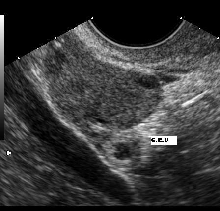

Ficha del catálogo
Embarazo ectópico
- Sistema
- Reproductor
- Modalidad
- US
- Región
- Pelvis femenina, trompas y anexos
- Dificultad
- Avanzado
El embarazo ectópico es la implantación del producto de la concepción fuera de la cavidad endometrial, con localización tubárica en la gran mayoría de los casos. Constituye una causa importante de morbilidad y de hemorragia en el primer trimestre. Se sospecha ante dolor pélvico, sangrado y prueba de embarazo positiva, y su diagnóstico precoz permite tratamientos conservadores.
Técnica
El estudio se basa en el ultrasonido transvaginal correlacionado con la concentración sérica de gonadotropina coriónica. Se explora sistemáticamente la cavidad endometrial, ambos anexos y el fondo de saco de Douglas. El Doppler color ayuda a identificar el anillo vascular del saco ectópico y a diferenciarlo del cuerpo lúteo.
Qué observar
- Ausencia de saco gestacional intrauterino con niveles hormonales por encima de la zona discriminatoria
- Masa anexial extraovárica con anillo ecogénico periférico
- Saco gestacional extrauterino con saco vitelino o embrión
- Anillo vascular periférico de baja resistencia en Doppler
- Líquido libre ecogénico en el fondo de saco de Douglas
- Movilidad independiente de la masa respecto al ovario ipsilateral
Hallazgos
El hallazgo más frecuente es una masa anexial heterogénea separada del ovario, con un anillo tubárico ecogénico que rodea un centro anecoico. El signo específico es la visualización de un saco gestacional extrauterino con saco vitelino o polo embrionario. La presencia de líquido libre ecogénico sugiere hemoperitoneo y, dentro del útero, puede observarse un pseudosaco de contorno único y localización central.
Perlas
La maniobra clave para distinguir la masa ectópica del cuerpo lúteo es comprobar su movilidad independiente respecto al ovario aplicando presión suave con el transductor: El cuerpo lúteo se desplaza junto al ovario, mientras que el saco tubárico se mueve por separado. El anillo tubárico también suele ser más ecogénico que el parénquima ovárico.
Diagnóstico diferencial
- Cuerpo lúteo
- Es intraovárico, se desplaza con el ovario y su pared es menos ecogénica que el anillo tubárico.
- Aborto en curso o incompleto
- Muestra material heterogéneo intracavitario con descenso progresivo de los niveles hormonales y ausencia de masa anexial.
- Embarazo intrauterino precoz
- Presenta saco gestacional excéntrico dentro del endometrio con el signo del doble anillo decidual.
- Hidrosálpinx o absceso tuboovárico
- Adopta forma tubular plegada con pliegues incompletos y contexto infeccioso, sin prueba de embarazo positiva.
Simuladores
- Cuerpo lúteo con anillo vascular intenso
- Pseudosaco intrauterino
- Asa intestinal adyacente al anexo
Por modalidad
- TC
- No es la técnica indicada, aunque puede detectar hemoperitoneo en una paciente inestable estudiada por otro motivo.
- US
- Es el pilar diagnóstico: Localiza la gestación, valora la vascularización y detecta el hemoperitoneo con gran rapidez.
Protocolo
Ultrasonido transvaginal con vejiga vacía y barrido sistemático del útero en planos sagital y transversal, seguido de exploración de ambos anexos y del fondo de saco. Se emplea Doppler color con baja velocidad y filtro bajo para detectar flujos lentos, y se aplica presión suave con el transductor para valorar la movilidad de la masa. El estudio se interpreta siempre junto a la determinación seriada de gonadotropina coriónica.
Clasificación
Se clasifica según su localización en tubárico, que incluye las variantes ampular, ístmica y fímbrica, e intersticial o cornual, junto a formas menos frecuentes como el cervical, el ovárico, el abdominal y el implantado sobre una cicatriz de cesárea. Cuando no se identifica la gestación se emplea el término de embarazo de localización desconocida, que obliga a seguimiento estrecho.
Errores frecuentes
- Confundir un pseudosaco intrauterino con un embarazo incipiente y descartar la sospecha de ectópico
- Identificar el cuerpo lúteo como la masa ectópica y errar la lateralidad o el diagnóstico
- No explorar la región intersticial y pasar por alto un embarazo cornual de mayor riesgo hemorrágico

embarazo ectópico anillo tubárico gonadotropina coriónica pseudosaco hemoperitoneo cuerpo lúteo primer trimestre